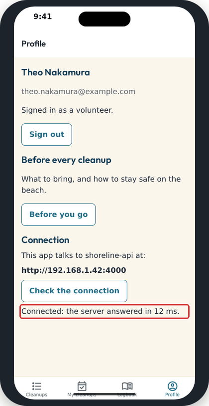
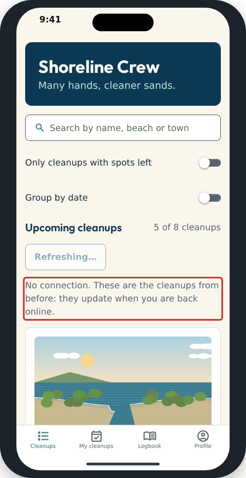

Session 12: Reaching the API and TanStack Query on Mobile
How to teach the session where Shoreline Crew finally gets data on a phone: localhost means this device, the API opened to the Wi-Fi with --host and tested one link at a time, an address per device in .env.local, no CORS on a phone, a client whose errors name the address; then TanStack Query on a phone: the two signals a browser gives for free (AppState, NetInfo), offline as paused, a list that pages itself with useInfiniteQuery, sign-ups as mutations that wait and invalidate, and one place for an ended sign-in. Two headless labs, no phone needed.
How to Use This Guide
- Same rhythm for both lessons: frame (the goal and one mental model) → live demo (you type, they follow) → guided lab (a kit lab: new practice on the lesson's ideas, never the lesson's own project) → start the lesson's own project. The lesson exercises, quiz and journal are homework.
- Type, do not paste. Every command below was run to produce the output printed under it, in a learner's terminal: the API on a private port started like a learner's (
--hostwhere the step says so), Lesson 5.1's code on a copy of the app exactly as a learner has it at the end of 5.1, Lesson 5.2's at the end of 5.2. Where the lesson shows the same command, the kit's output is the lesson's, word for word. Ask for a prediction before every run. - No phone was used to make this kit. This is the session where the phone finally gets data, so have your own phone with Expo Go on the projector Wi-Fi: it is the one demo the kit cannot run. What only a phone shows (Expo Go reaching your laptop over Wi-Fi, the iPhone's Local Network prompt, AppState and NetInfo, airplane mode) is described the way the lessons describe it, from the platforms' and libraries' documentation; the lessons measured the computer's half and the web preview.
- Keep
lesson_15.htmlandlesson_16.htmlopen for the tables (addresses, CORS, signals, the Lesson 3.2 → Query mapping, the sign-up endpoints). Labs live inlabs/module-12/:starter/folders andTASKS.mdare handouts;solution/folders are yours until the session is over. - Part 2, Navigation, Data and Devices, runs Sessions 10 to 17. Session 13 holds Checkpoint 2 (Modules 4 and 5 so far) after its break: today's two lessons are half of it.
Lesson 5.1 is the session where a phone must reach a laptop. Guest, school, office and hotel networks often use client isolation: the phone and the laptop cannot see each other, and nothing on the laptop can fix it. WSL's default networking hides the laptop behind a 172. address too. Before: test the venue network yourself with your phone's browser at your laptop's http://ADDRESS:4000/api/health (API started with --host). If it fails, plan the fallback now: a phone hotspot that laptops join, the Android emulator (10.0.2.2), or the web preview for the day; Steps 3 and 8 then go home. In the room: one phone-browser test per pair, never a 20-minute firewall hunt in front of everyone; the lab needs no network at all. After: whoever could not connect does Steps 3 and 8 on their home Wi-Fi with the lesson's chain checklist.
Before the Session
- ☐ Learners arrive with their app at the end of Lesson 4.4 (sign-in, deep links, Share this cleanup). Anyone behind:
lesson-15-start.zipfrom the course downloads is exactly that code (npm installinshoreline-crew,.env.example→.env.localas its README says). - ☐ Run the kit check once:
python3 labs/check_labs.py module-12from this kit's folder (both labs: the starters fail as shipped, the solutions pass their tests, type checks and lint, Lab 5.2's solution also bundles for the web). No API and no network needed. - ☐ Projector machine: VS Code on
shorelineat a large font; three terminals ("api" ready to restart with--host, "crew" inshoreline-crew, a third forcurl); the web preview at a phone size;lesson_15.htmlandlesson_16.html; your phone with Expo Go on the SAME network, ideally mirrored to the projector. Know your laptop's network address (Metro'sexp://line) and check/api/healthfrom your phone's browser before learners arrive. - ☐ For the demos: a scratch copy of
lesson-15-end(5.1) andlesson-16-end(5.2) from the course downloads withnpm installdone, so the mistakes you make on purpose never touch your teaching copy; curl on the projector machine (PowerShell:curl.exe). - ☐ Board, before learners arrive: the address table (web preview / Simulator localhost · emulator 10.0.2.2 · phone YOUR-ADDRESS + --host); the chain "phone → Wi-Fi → firewall → (WSL) → --host → API" with "test one link at a time"; for 5.2 the three signal rows (foreground, connection, screen) and "offline = paused, not failed".
- ☐ Print or share: the workbook; sticky notes for the exit ticket.
| Symptom | Cause | Fix |
|---|---|---|
curl: (7) … Connection refused on the network address | The API runs without --host | Ctrl+C, node server.ts --host; localhost still answering proves the API is fine. |
| The address under Metro's QR code starts with 172. | WSL's default (NAT) networking | Run Node in Windows, or mirrored networking (.wslconfig, wsl --shutdown), or the Android emulator (Lesson 5.1). |
The phone's browser spins on /api/health | Client isolation on the Wi-Fi, the firewall, or a different network | Same Wi-Fi? Allow Node on private networks; a phone hotspot to test; else the emulator or the web preview. |
Changed .env.local, still the old address | The value is inside the bundle Metro built | Ctrl+C, npx expo start --clear; Profile's Connection shows the address the bundle has. |
EXPO_PUBLIC_API_URL is "…/api": leave out the /api at the end | The API's banner address copied whole | Remove /api, restart with --clear. |
| "blocked by CORS policy" in a phone's browser | The web preview opened on the phone | Expo Go on the phone; the web preview in the computer's browser. |
No QueryClient set, use QueryClientProvider to set one | The provider is missing from the root layout | Wrap the layout's navigator in <QueryClientProvider client={queryClient}> (Step 2). |
| TS2769 "No overload matches this call" on the Cleanups screen | infinite options passed to useQuery | useInfiniteQuery (Common Mistakes). |
| A guest sees "Your sign-in has ended" | A disabled query refetched with its own refetch() | useRefreshOnFocus: the client's refetchQueries with type: 'active'. |
Session 12 Agenda (3 hours)
| Clock | Minutes | Segment | What happens |
|---|---|---|---|
| 0:00 | 10 | Warm-up: Session 11 retrieval | Three questions on sign-in and deep links, answered from memory; collect the "phone shows nothing" stories. |
| 0:10 | 10 | 5.1 Frame and mental model | The meeting point: localhost means this device; the address table for four places the app runs. |
| 0:20 | 20 | 5.1 Live demo | The API with --host, curl on the network address, a refusal without it, pictures that follow the host, CORS by origin, the advice function run with Node. |
| 0:40 | 20 | 5.1 Guided lab | labs/module-12/l5_1-reaching-the-api-from-a-phone/starter: Tasks 1 and 2 in pairs, a .env.local checker and the address table as code. |
| 1:00 | 20 | 5.1 Start the lesson project | Steps 1, 2 and 4: the computer's address, the API with --host, .env.example and .env.local, Metro with --clear. |
| 1:20 | 10 | Break | Phones and laptops on the same (trusted) Wi-Fi; who reached /api/health from the phone's browser? |
| 1:30 | 10 | 5.2 Frame and mental model | The radio check: what a browser tells the cache and a phone does not; paused, not failed. |
| 1:40 | 30 | 5.2 Live demo | The install card, the cache file, the two hooks, infinite options in useQuery (tsc), the sign-up endpoints for Theo, invalidation, clean checks. |
| 2:10 | 20 | 5.2 Guided lab | labs/module-12/l5_2-tanstack-query-on-mobile/starter: Tasks 1 and 2, the provider and the online manager (offline = paused). |
| 2:30 | 20 | 5.2 Start the lesson project | Steps 1 to 3: install, the cache with its 401 handler, the two hooks in the root layout. |
| 2:50 | 10 | Wrap-up | Exit ticket (3 questions), homework, bring list for Session 13 (Checkpoint 2). |
| Total | 180 | Ends at 3:00. |
In the room. The lesson pages estimate 140 + 160 = 300 minutes for a learner working alone; after the warm-up, the break and the wrap-up the room has 150. Each lesson keeps its full shape (model, demo, lab, project start); the rest of each project goes home. Lesson 5.2 gets the longer demo: it is the bigger code change, and its two phone-only hooks deserve a slow read.
Goes home (about 2 to 3 hours). Lesson 5.1's project Steps 3 and 5 to 9 (the phone's browser test, address.ts, the client's errors, the Connection check, Shoreline Crew on the phone, check and commit); Lesson 5.2's project Steps 4 to 10 (the Cleanups list and the cleanup screen on the cache, the sign-up mutations, Sign up and cancel, My cleanups, Profile, the phone walk-through, check and commit); Lab 5.1 Task 3 and Lab 5.2 Task 3; each lesson's Hands-on Exercises; both Quick Quizzes; both journal entries; both "Before the Next Lesson" lists. Lesson 5.2's project is the longest of Part 2 so far: say so.
Protect, in this order: the 5.1 "test the road" step (curl, then the phone's browser: the method the lesson is about); the 5.2 sign-up endpoints and invalidation steps; the 5.2 online-manager step; both labs' Task 1. Cut first: the 5.1 Connection-check listing and the 5.2 install step (both are in the lessons), then the 5.1 pictures-and-CORS step (say the rule, skip the requests), then the 5.2 infinite-options mistake.
Opening Segment
Warm-up: Session 11 Retrieval
10 min- Retrieval (6m). Three questions on the slide, no notes, then reveal: (1) Where does Shoreline Crew keep a volunteer's session on a phone, and what can the web preview not do with it? (SecureStore; the web preview has no SecureStore, so the session does not survive there the same way: Lesson 4.3.) (2) What does the API answer to a request with an old token after it restarts? (401, even for the public list of cleanups: Lesson 4.3's quirk, which 5.2 handles in one place today.) (3) What does Share this cleanup put in the message? (the cleanup's text and an
exp://link that opens the cleanup screen: Lesson 4.4.) - The stories (4m). "Who has opened Shoreline Crew on a phone since Lesson 1.3? What did it show?" ("Could not reach the server", every time.) Write "why?" on the board: Lesson 5.1 answers it, and Lesson 5.2 makes the app behave when the network comes and goes. Ask who is on the venue Wi-Fi with a phone, and whether anyone runs WSL (they need the 172. note in the first demo).
Lesson Plans
Reaching the API from a Phone
70 min- Explain what localhost means on a computer, a phone, an Android emulator and an iOS Simulator, and pick the right API address for each
- Open shoreline-api to your network with --host, find your computer's network address, and test it before the app is involved
- Point the app at an address through EXPO_PUBLIC_API_URL per device, and rebuild the bundle so the change takes effect
- Say why a phone app needs no CORS while the web preview does, and why the API's picture addresses work on every device
- Make the HQ's typed client name the address that failed and suggest a fix, and add a connection check you can use on any device
- Get past Windows and WSL networking, firewalls and Wi-Fi that keeps devices apart
| 10m | Frame: the meeting point; localhost means this device; the address table |
| 20m | Live demo: --host, curl on the network address and without --host, pictures and CORS, the advice function, the Connection check |
| 20m | Guided lab: l5_1-reaching-the-api-from-a-phone/starter, Tasks 1 and 2 |
| 20m | Start the lesson project: Steps 1, 2 and 4 |
From the lesson: "Every cleanup has a meeting point, and how you describe it depends on who is asking. To a volunteer already in the car park, 'over here' is enough. To someone driving in from Calder Bay, you give the road and the landmark. localhost is 'over here': perfect for the web preview, which stands next to the API on your computer, and useless to a phone, which is 'driving in' over Wi-Fi. The API is in the same place either way; only the directions change."
Then the second half of the picture: the computer must accept visitors. node server.ts listens on localhost only; --host listens on every address the computer has. And the method the lesson gives for every network problem: test one link of the chain at a time (curl from the computer, then the phone's browser, then the app). Write the chain on the board.
Learners follow on their own machines (the API and curl; the phone's browser if they have one on a network that allows it). The outputs below come from the course API and a copy of the app as a learner has it at the end of Lesson 5.1; on learners' machines the network address differs and everything else matches.
- Where is localhost? (3m). Put the lesson's table on the board before you type anything: the web preview and the iOS Simulator
http://localhost:4000; the Android emulatorhttp://10.0.2.2:4000; Expo Go on a phonehttp://YOUR-ADDRESS:4000withnode server.ts --host. Ask: "since Lesson 1.3 the phone has shown 'Could not reach the server'. Why?" (on a phone, localhost is the phone). The Simulator and emulator rows come from the platforms' documentation, as the lesson says: the course could not run either. - Open the API to the network (3m). In the API's terminal, Ctrl+C, then start it with
--hostand read the new line together:node server.ts --host
Shoreline Crew API running at http://localhost:4000/api on your network: http://192.168.1.42:4000/api sample sign-in: maya.okafor@example.com (organizer) or theo.nakamura@example.com (volunteer), password shoreline-demo Press Ctrl+C to stop.
The kit's run is the lesson's card line for line (the kit's API ran on its own port; shown here as 4000, the learners' port).on your network:is the address a phone on the same Wi-Fi uses; 192.168.1.42 is the course's example, yours differs. Metro prints the same computer address under its QR code (› Metro: exp://192.168.1.42:8081). Say the 🛑 note:--hostopens the door to everyone on the Wi-Fi; trusted networks only, Ctrl+C when done. - Test the road before the app drives on it (4m). A third terminal, on the computer itself, with the address the API printed:
curl http://192.168.1.42:4000/api/health
{ "ok": true, ... }okand the date the sample data is built around (left out here, as in the lesson). Then stop the API, start it WITHOUT--host, and ask for a prediction before the same command. The kit's run:curl: (7) Failed to connect to 192.168.1.42 port 4000 after 0 ms: Connection refused. The API is running (localhost still answers): it just does not listen on that address. The next test is the phone's browser at the same address: if the phone shows the little JSON, the network works and anything left is in the app. Show it with your own phone if you can; the course could not hold a phone, so that half follows the platforms' documentation. - Pictures follow, CORS does not apply (4m). The kit asked the API for
/api/siteswith the request addressed to the network address (Host192.168.1.42:4000). Two of the picture URLs:curl http://192.168.1.42:4000/api/sites
... "url": "http://192.168.1.42:4000/images/sites/pelican-point.jpg", "url": "http://192.168.1.42:4000/images/sites/driftwood-cove.jpg", ...Asked at localhost, the same list sayshttp://localhost:4000/images/…: the API builds each URL from the address the request arrived at, which is why Lesson 2.3 promised no picture code today. Then the CORS table, measured by the kit with three requests to/api/health: no Origin (Expo Go's native fetch) gets noAccess-Control-Allow-Originand needs none;Origin: http://localhost:8081(the web preview) gets it back;Origin: http://192.168.1.42:8081(the web preview opened on a phone) gets none, so that browser blocks the answer. - A client that knows about addresses (4m). Open the stage's
src/api/address.ts(Lesson 5.1, Step 5). It has no React and no fetch, so it runs with plain Node. The kit ran it for three addresses on three platforms:http://localhost:4000 web Check that shoreline-api is running, then try again. http://localhost:4000 android On Android, localhost is the device itself. Put your computer's network address in .env.local (10.0.2.2 on the emulator). http://localhost:4000 ios On a phone, localhost is the phone itself (only the iOS Simulator shares your computer's). Put your computer's network address in .env.local. http://10.0.2.2:4000 web 10.0.2.2 works only inside the Android emulator: the web preview uses localhost. http://10.0.2.2:4000 android Check that shoreline-api is running, then try again. (10.0.2.2 works on the emulator, not on a phone.) http://10.0.2.2:4000 ios 10.0.2.2 works only inside the Android emulator. Put your computer's network address in .env.local. http://192.168.1.42:4000 web Check that shoreline-api is running (with --host for this address), then try again. http://192.168.1.42:4000 android Check that shoreline-api is running with --host and that this device is on the same Wi-Fi as your computer, then try again. http://192.168.1.42:4000 ios Check that shoreline-api is running with --host and that this device is on the same Wi-Fi as your computer, then try again.
The Android-and-localhost line is exactly what the lesson's card says an Android phone should show after "Could not reach the server at http://localhost:4000." (the function's real output; the screen itself needs a phone). ThenaddressProblemfor the mistakes you can catch before sending anything: -
"" EXPO_PUBLIC_API_URL is not set: copy .env.example to .env.local, then restart Metro. "localhost:4000" EXPO_PUBLIC_API_URL is "localhost:4000": start it with http://, as in http://192.168.1.42:4000. "http://192.168.1.42:4000/api" EXPO_PUBLIC_API_URL is "http://192.168.1.42:4000/api": leave out the /api at the end (the app adds it). "http://192.168.1.42:4000" null (written correctly)
Every screen gained these words at once, because every screen showsdescribeError(error): the HQ's "one place turns errors into words" design paying off. - The Connection check (2m). Show the heart of
ConnectionCheck.tsx: a union for its state, an AbortController with an eight-second limit, the address shown selectable so a volunteer can copy it:shoreline-crew/src/components/ConnectionCheck.tsxasync function run() { setCheck({ kind: 'checking' }); const controller = new AbortController(); const timer = setTimeout(() => controller.abort(), timeoutMs); const started = Date.now(); try { await getHealth(controller.signal); setCheck({ kind: 'connected', ms: Date.now() - started }); } catch (error) { setCheck({ kind: 'failed', message: describeError(error) }); } finally { clearTimeout(timer); } }
Then the lesson's screenshot of Profile's Connection section in the web preview.

- Leaving localhost in
.env.localfor a phone. The web preview works, so it feels done. Coach: "Where does localhost point when the app runs on the phone?" Then the advice the client now prints (Self-check Q1, the lesson's quiz Q1). - The right address, the API started without
--host. Coach: "Does localhost still answer? Then the API is fine: what does it listen on?" (Self-check Q2.) - Saving
.env.localand only reloading. Coach: "When does Metro copy the value into the bundle?" (when it builds:npx expo start --clear; Profile's Connection shows what the bundle has.) Also watch for/apicopied from the banner and a missinghttp://(Lab 5.1 Task 1 is exactly these).
Folder: learners work in labs/module-12/l5_1-reaching-the-api-from-a-phone/starter/ (task sheet labs/module-12/l5_1-reaching-the-api-from-a-phone/TASKS.md); your reference is labs/module-12/l5_1-reaching-the-api-from-a-phone/solution/. It practices the lesson's ideas on new material: a checker for a whole .env.local text, the lesson's address table as a function, and a health check that gives up and names the address. MSW plays the computers on the network (one answers with a real /api/health answer from fixtures/, one refuses, one never answers): no phone, no running API. Needs only the shared lab install.
- Run it as shipped first (3m).
npm testin the lab'sstarter: six tests fail and one passes (the computer that answers already works). One test waits five seconds before it fails: ask why while it waits. The first failures, from the top:
● Task 1: a correct .env.local gives the address, without a trailing slash TODO 1: read EXPO_PUBLIC_API_URL from "# Where the app find"… ● Task 1: the five problems, each in words a teammate can act on TODO 1: read EXPO_PUBLIC_API_URL from "# nothing here yet\n"… ● Task 2: the address and the API command for each kind of device expect(received).toEqual(expected) // deep equality
- Tasks 1 and 2 in pairs (13m): Task 1 checks five problems in a fixed order (missing, twice, spaces around
=, nohttp://,/apiat the end); Task 2 is the board's table. Circulate forvalue.trim()swallowing the spaces the test wants reported, and for a phone address hard-coded to 192.168.1.42 instead of thelanparameter. - Expected when everything is done (the solution's run):
PASS src/lab.test.ts ✓ Task 1: a correct .env.local gives the address, without a trailing slash ✓ Task 1: the five problems, each in words a teammate can act on ✓ Task 2: the address and the API command for each kind of device ✓ Task 2: addresses a phone cannot use for your computer ✓ Task 3: a computer that answers ✓ Task 3: a refusal and a 404 name the address ✓ Task 3: an address nobody answers gives up after the time limit Tests: 7 passed, 7 total
- Debrief (4m): "Which of Task 1's problems would the app have caught by itself today?" (missing, no
http://,/api:addressProblem; the spaces and the duplicate line would silently give a wrong value). "Which test waited, and what would a volunteer have seen meanwhile?" (the never-answering address: a spinner; Task 3 is the fix and goes home).
The lesson project is Shoreline Crew on Your Phone, nine steps. In the room, Steps 1, 2 and 4 (20 minutes): the addresses and the restart. No packages to install today.
- Step 1:
npx expo start, read› Metro: exp://ADDRESS:8081, write the address down; a 172. address on WSL means the three ways out first. - Step 2: the API with
node server.ts --host, theon your networkline matches Metro's;curl http://ADDRESS:4000/api/healthfrom a third terminal (curl.exein PowerShell). Step 3 (the phone's browser) only on a network that allows it; otherwise at home. - Step 4: the lesson's
.env.exampletable;.env.localwith the network address (no/api, no spaces around=);npx expo start --clear; press w: the web preview still shows the cleanups, now from the network address. - Done in the room = curl answers
"ok": trueon the network address and the web preview loads the cleanups from it. Goes home: Steps 3 and 5 to 9 (address.ts, the client's errors, the Connection check, the phone walk-through, check and commit).
Ask these out loud during the demo and the lab:
- What does localhost mean in the web preview, on the Android emulator, on a phone? Answer: your computer; the emulator itself; the phone itself.
- Which address does a phone on your Wi-Fi use, and what must the API do? Answer: the computer's network address (Metro's exp:// line), API started with
--host. - You changed
.env.local. What do you run? Answer:npx expo start --clear(the value is inside the bundle). - Why does Expo Go need no CORS header? Answer: CORS is a browser rule; native fetch sends no Origin.
Workbook self-check, items Q1 to Q6 (learners do them at the end of the block or at home).
Answers: Q1 B) http://10.0.2.2:4000; Q2 Connection refused (curl exits with code 7): without --host the API listens on localhost only; Q3 C) 10.0.2.2 works only inside the Android emulator: the web preview uses localhost.; Q4 D) The phone's browser blocks the answer: there is no Access-Control-Allow-Origin header; Q5 A) http://10.0.2.2:4000, and Metro leaves out its env: lines; Q6 A refused connection fails at once, but an address nobody answers on Wi-Fi can hang far longer; an AbortController stops the wait and the advice can show. Full set with explanations in the Answer Key.
Support: learners without a phone or on a network that isolates devices do the whole lesson with the web preview on the network address (it works, measured) and Steps 3 and 8 at home. One card: "web preview / Simulator: localhost · emulator: 10.0.2.2 · phone: Metro's address + --host · changed .env.local? --clear".
Stretch: Lab 5.1 Task 3; the lesson's Exercise 2 (the shell variable that wins over the file) and Exercise 4 (Metro's hostUri, dev-only); the Bonus Challenge (a team "phone can't connect" checklist).
TanStack Query on Mobile
80 min- Say which signals a browser gives TanStack Query that a phone does not, and connect focusManager to AppState and onlineManager to NetInfo
- Explain what a "paused" query or mutation is, and show volunteers what is happening while the phone has no connection
- Load a list page by page with useInfiniteQuery, keeping the footer states, pull to refresh and the "ask only when idle" rule from Lesson 3.2
- Refresh a screen's data when it comes back into view, because tabs and stacks keep screens mounted
- Sign up for a cleanup and cancel with mutations that wait for the API and invalidate what they change
- Notice an ended sign-in (a 401) in one place for every query and mutation
| 10m | Frame: the radio check; what a browser tells the cache and a phone does not; paused, not failed |
| 30m | Live demo: install, the cache, the two hooks, infinite options in useQuery, the sign-up endpoints, invalidation, clean checks |
| 20m | Guided lab: l5_2-tanstack-query-on-mobile/starter, Tasks 1 and 2 |
| 20m | Start the lesson project: Steps 1 to 3 |
From the lesson: "On a big cleanup, the crew leader keeps a notebook of what each team last reported. In the car park it is easy: everyone is within shouting distance. Out on the beach, the leader only knows a team is back if the team radios in, and only knows the radio is down if someone says so. TanStack Query is the leader with the notebook. In a browser, people shout. On a phone, you hand out the radios: AppState radios in 'back in the foreground', NetInfo radios in 'signal lost' and 'signal back'."
Then the change in feel: with the online manager told, offline means paused: a query that needs to fetch does not even try, the cached answer stays on screen, and it carries on by itself when the signal returns; mutations pause the same way. Without it, the phone sends requests that fail after retries. Most of today's code is a straight copy of the HQ; what is new is the world around the cache (and useInfiniteQuery, which the HQ never needed).
The outputs come from the course API (as Theo, with the API's volunteer token) and a copy of the app as a learner has it at the end of Lesson 5.2. Learners follow the code in their own copy of lesson-16-end or simply watch: their own project starts after the lab.
- What a phone does not tell the cache (3m). Draw the lesson's three rows: back to the app (browser
visibilitychange; phone AppState'active'→focusManager.setFocused), the connection (browser online/offline; phone NetInfo →onlineManager.setEventListener), back to a screen (a web page mounts; tabs and stacks stay mounted →useRefreshOnFocus). The lesson read TanStack Query 5.107's source: both managers listen only whenwindow.addEventListenerexists, which React Native does not have. - Install (2m). Stop Metro. One command installs both; Expo picks NetInfo's SDK 58 version (a native module, already in Expo Go) and passes TanStack Query to npm. The lesson's card (the kit installs nothing):
npx expo install @tanstack/react-query @react-native-community/netinfo
› Installing 1 SDK 58.0.0 compatible native module and 1 other package using npm > npm install --save @tanstack/react-query added 3 packages, and audited 799 packages in 2s ... 8 moderate severity vulnerabilities ...
The vulnerabilities line is npm's audit of the whole project, not an error. Nevernpm audit fix --force. - The cache, adapted from the HQ (4m). Open
src/api/queries.tsnext to the HQ's if anyone has it: staleTime, the retry rule, viewerId and the key shapes are copies. New: the two cache error handlers (one place for every 401) and the paged list:shoreline-crew/src/api/queries.tsexport function upcomingEventsQuery(viewer: string) { return infiniteQueryOptions({ queryKey: ['events', 'upcoming', viewer], queryFn: ({ pageParam, signal }) => getEvents(`when=upcoming&page=${pageParam}&perPage=${perPage}`, signal), initialPageParam: 1, // The page after the last one loaded, or undefined: there is no next page getNextPageParam: (lastPage) => lastPage.page.page < lastPage.page.totalPages ? lastPage.page.page + 1 : undefined, }); }
Map it to Lesson 3.2's hand-written state:hasMore→hasNextPage,loadNextPage()→fetchNextPage(), the attempt counter →refetch(). - The connection, from NetInfo (3m). The second hook, in the root layout next to
useAppStateFocus, above the early return (the Rules of Hooks):shoreline-crew/src/hooks/useOnlineManager.tsexport function useOnlineManager(): void { useEffect(() => { // The web preview keeps the browser's own online and offline events if (Platform.OS === 'web') { return; } // NetInfo calls the function with every change of connection, and returns a way to stop onlineManager.setEventListener((setOnline) => NetInfo.addEventListener((state) => { // isConnected is null while NetInfo does not know yet: count that as online. // Not isInternetReachable: shoreline-api is on your Wi-Fi, which needs no internet. setOnline(state.isConnected !== false); }), ); }, []); }
Two details from the lesson:isConnected, notisInternetReachable(the API is on your Wi-Fi, which needs no internet), and null counts as online (NetInfo does not know yet at startup). The web preview keeps the browser's own events (NetInfo's web version missed Chromium's offline switch: measured in the lesson). - Infinite options in useQuery (5m). Make the lesson's mistake in the Cleanups screen:
useQuery(upcomingEventsQuery(viewerId(session))). Prediction: will Metro mind? (no: it does not check types). Then:npx tsc --noEmit
src/app/(tabs)/index.tsx:34:27 - error TS2769: No overload matches this call. src/app/(tabs)/index.tsx:91:16 - error TS2339: Property 'hasNextPage' does not exist on type 'DefinedUseQueryResult<InfiniteData<Page<CleanupEvent>, unknown>, Error>'. src/app/(tabs)/index.tsx:91:61 - error TS2339: Property 'isFetchNextPageError' does not exist on type 'DefinedUseQueryResult<InfiniteData<Page<CleanupEvent>, unknown>, Error>'. src/app/(tabs)/index.tsx:92:14 - error TS2339: Property 'fetchNextPage' does not exist on type 'DefinedUseQueryResult<InfiniteData<Page<CleanupEvent>, unknown>, Error>'. src/app/(tabs)/index.tsx:153:12 - error TS2339: Property 'isFetchingNextPage' does not exist on type 'DefinedUseQueryResult<InfiniteData<Page<CleanupEvent>, unknown>, Error>'. src/app/(tabs)/index.tsx:155:16 - error TS2339: Property 'isFetchNextPageError' does not exist on type 'DefinedUseQueryResult<InfiniteData<Page<CleanupEvent>, unknown>, Error>'. src/app/(tabs)/index.tsx:156:78 - error TS2339: Property 'fetchNextPage' does not exist on type 'DefinedUseQueryResult<InfiniteData<Page<CleanupEvent>, unknown>, Error>'. src/app/(tabs)/index.tsx:157:27 - error TS2339: Property 'hasNextPage' does not exist on type 'DefinedUseQueryResult<InfiniteData<Page<CleanupEvent>, unknown>, Error>'. Found 8 errors in the same file, starting at: src/app/(tabs)/index.tsx:34
Trimmed to the first line of each error: the kit's run on a copy of the finished app, the same first and last lines as the lesson's card. Read the TS2339s first: a plain query's result has nohasNextPage. Undo; tsc prints nothing again. - Signing up is a mutation: the endpoints (5m). With the API running, as Theo (curl's
Bearer dev-volunteertoken). Boardwalk and Mudflats has 9 of 16 spots left. POST a sign-up:curl -X POST -H "Authorization: Bearer dev-volunteer" -H "Content-Type: application/json" -d '{}' http://localhost:4000/api/events/e09/signupsHTTP/1.1 201 Created { "eventId": "e09", "status": "confirmed" }The API decidedconfirmed(a spot was left); now 8 of 16 spots are left. Ask: "what if the same request goes out again, from another phone or after a reconnect?" Run it again: -
HTTP/1.1 409 Conflict { "error": "conflict", "message": "You are already signed up for this cleanup." }A 409 with words a person can read: that is what makes a paused mutation sent twice harmless, and why Shoreline Crew waits for the API instead of showing "You are signed up" at once (no optimistic update: only the API knows spot or waiting list). - Invalidate what changed (3m).
src/api/mutations.ts: one factory per change, and one function that refreshes everything a sign-up changes:shoreline-crew/src/api/mutations.ts// A sign-up changes the spots left (on every list and cleanup screen) and your own sign-ups. // Returning the promise keeps the mutation pending until the screens have the new answers. function refreshSignups() { return Promise.all([ queryClient.invalidateQueries({ queryKey: ['events'] }), queryClient.invalidateQueries({ queryKey: ['signups'] }), ]); } /** Sign up for a cleanup. Waits for the API: it decides between a spot and the waiting list. */ export function signUpMutation() { return mutationOptions({ mutationFn: (eventId: string) => postSignup(eventId), // onSettled, not onSuccess: after a "no" (already signed up on another phone, the last spot // just went) the screens need the truth too onSettled: refreshSignups, }); }
Two keys reach the paged list, every cleanup screen and My cleanups (the HQ's general-to-specific keys). onSettled, not onSuccess: after a 409 the screens need the truth too. Returning the promise keeps the button on "Signing up…" until the new answers are on screen. The lesson measured the four requests one press sends: the POST, then page 1 of the list, the cleanup,/api/me/signups. - Offline is paused, not failed (2m). Show the lesson's screenshot of the Cleanups tab with the browser switched offline: the cards stay, "No connection. These are the cleanups from before…". On a phone, NetInfo reports the connection; the lesson measured the web preview with the browser playing the phone's part, and says so. Lab 5.2 Task 2 proves the cache's half headless.
- Clean checks (1m). Undo every change; the two commands before any task is done:
npx tsc --noEmit npx expo lint
env: load .env.local env: export EXPO_PUBLIC_API_URL
tsc prints nothing, expo lint only the twoenv:lines (the lesson's card).

- Forgetting
QueryClientProvider. A blank web preview and a console message; a red screen on a phone. Coach: "Where does a useQuery find its cache?" (Self-check Q10; Lab 5.2 Task 1's first failure is the same words.) - A key without the viewer.
['signups']looks right until two people share a phone. Coach: "Does this answer depend on who is asking? Then who goes in the key?" (the lesson's measured Theo-then-Maya case). - Expecting the browser's behavior on a phone. "It refetched when I came back to the tab, so it works." Coach: "Who told the cache, the browser or your code?" Only Expo Go shows the difference (Step 10).
Folder: labs/module-12/l5_2-tanstack-query-on-mobile/starter/ with labs/module-12/l5_2-tanstack-query-on-mobile/TASKS.md; your reference is labs/module-12/l5_2-tanstack-query-on-mobile/solution/. A list the course app does not have (the PAST cleanups, three at a time, with Load more) whose component and request are given; learners write the three pieces a phone needs around TanStack Query. MSW answers like shoreline-api from fixtures/past.json, the real seven past cleanups, with the totals in the headers.
- Run it as shipped (2m).
npm test: all five fail. The first message is the lesson's Common Mistake, word for word:
● Task 1: the list finds its cache and shows the first page No QueryClient set, use QueryClientProvider to set one
- Task 1 (4m): the provider. Ask first: "did
npm run typecheckcomplain?" (no: it is a runtime rule). - Task 2 in pairs (10m):
connectOnlineManager(source):onlineManager.setEventListener((setOnline) => source((state) => setOnline(state.isConnected !== false))). The test plays NetInfo: offline, the list says "Waiting for a connection…" and MSW records NO request; online, page 1 arrives by itself. Circulate forstate.isConnected === true(null at startup would count as offline). - Expected when all three tasks are done (the solution's run; Task 3 goes home):
PASS src/lab.test.tsx ✓ Task 1: the list finds its cache and shows the first page ✓ Task 2: offline, the query waits (paused) and asks nothing; online again, it carries on ✓ Task 2: null (the source does not know yet) counts as online ✓ Task 3: Load more fetches the next page until there is none ✓ Task 3: a refetch asks for every loaded page again, in order Tests: 5 passed, 5 total
- Debrief (4m): "In Task 2's test, how do we know the query did not just fail quietly?" (MSW's request list stays empty: paused means not sent). "Where does the source come from in the app?" (
NetInfo.addEventListener, on a phone only:App.tsxshows it).
The lesson project is Shoreline Crew on the Cache, ten steps and the longest project of Part 2 so far. In the room, Steps 1 to 3 (20 minutes): everything the screens will lean on.
- Step 1: stop Metro;
npx expo install @tanstack/react-query @react-native-community/netinfo; start Metro again. - Step 2:
src/auth/ended.ts(the same useSyncExternalStore pattern as useSession),src/api/queries.ts(the HQ's next to it if they have it),QueryClientProviderin the root layout after the!readycheck. - Step 3:
useAppStateFocusanduseOnlineManager, called in the root layout above the early return. - Done in the room = the app still runs exactly as before in the web preview (nothing uses the cache yet), and
npx tsc --noEmitprints nothing. Goes home: Steps 4 to 10 (the Cleanups list and the cleanup screen on the cache, sign-ups in the client and their mutations, Sign up and cancel, My cleanups, Profile, the phone walk-through, check and commit). The finished code islesson-16-endin the course downloads: Session 13's checkpoint starts from it.

Ask these out loud during the demo and the lab:
- Which two signals does a browser give TanStack Query that a phone app must wire? Answer: coming back to the app (AppState → focusManager) and the connection (NetInfo → onlineManager).
- What is a paused query? Answer: one that needs to fetch while offline: no request, the cached data stays, it continues by itself online.
- Why does Sign up wait for the API? Answer: only the API knows whether there is a spot or the waiting list.
- Why
type: 'active'in useRefreshOnFocus? Answer: a guest's disabled query is left alone;refetch()would send it and get a 401.
Workbook self-check, items Q7 to Q12 (learners do them at the end of the block or at home).
Answers: Q7 A) React Native's AppState changing to 'active'; Q8 B) useInfiniteQuery(upcomingEventsQuery(...)): infinite options go with the infinite hook; Q9 C) 'paused': no request is sent, the cached data stays; Q10 D) A QueryClientProvider around the screens (the root layout's job in the app); Q11 A) After a "no" the screens need the truth as much as after a "yes"; Q12 Page 1, then page 2: an infinite query refetches every loaded page in order, so the pages stay consistent and the list keeps its length. Full set with explanations in the Answer Key.
Support: learners who are new to TanStack Query (no HQ course) read the HQ-to-phone mapping in the lesson's tables first and do Steps 1 to 3 by copying; the concepts come in Steps 4 and 6. One card: "key = everything the answer depends on · onSettled → invalidate · offline = paused · infinite options → useInfiniteQuery".
Stretch: Lab 5.2 Task 3; the lesson's Exercise 2 (prefetch on onPressIn) and Exercise 4 (an optimistic cancel); the Bonus Challenge ("Updated N minutes ago" from dataUpdatedAt).
Closing
Put the three questions on the slide. Learners answer in the workbook's Exit Ticket box or on a sticky note. Question 1's pile tells you who still needs the phone connected before Session 13's checkpoint.
- Your phone shows "Could not reach the server at http://localhost:4000". Name the two changes that fix it. Answer:
.env.localgets the computer's network address (thennpx expo start --clear), and the API runs withnode server.ts --host. - What does a phone app have to tell TanStack Query that a browser tells it by itself? Answer: when the app comes back to the foreground (AppState) and when the connection drops or returns (NetInfo).
- Why does Sign up invalidate
['events']and['signups']in onSettled? Answer: a sign-up changes the spots on every list and cleanup screen and your own sign-ups; onSettled so a "no" (409) refreshes them too.
- Finish both lesson projects. 5.1: Steps 3 and 5 to 9 (phone's browser test,
address.ts, the client's errors, the Connection check, the app on the phone, commit). 5.2: Steps 4 to 10 and the completion checklist, including the commit. - Lesson exercises. 5.1: Exercises 1 to 3; Exercise 4 is a stretch. 5.2: Exercises 1 and 2; Exercises 3 and 4 are stretches.
- Both Quick Quizzes on the lesson pages (five questions each; answers are in the Answer Key).
- Labs: Lab 5.1 Task 3 (the health check with a time limit); Lab 5.2 Task 3 (the next page).
- Journal: both entries (5.1: the path of one request, phone to API and back; 5.2's prompt on the lesson page).
- Before the Next Lesson (from 5.2): force-quit the app and notice what is remembered (the session) and what is loaded again (the cache).
- The course folder with
shoreline-crewat the end of Lesson 5.2 (lesson-16-endfrom the downloads if needed), committed, and the API with its--hosthabit. - Session 13 teaches Lessons 5.3 (storage) and 5.4 (forms) and, after the break, holds Checkpoint 2 (Modules 4 and 5 so far: navigation, sign-in, deep links, the API from a phone, TanStack Query): a stand-alone lab that needs no course code.
- A phone with Expo Go (or the web preview), the journal and the workbook.
If You Run Long or Short
- Protect: the 5.1 "test the road" step; the 5.2 endpoints and invalidation steps; the 5.2 online-manager step; both labs' Task 1.
- Cut first (saves 4m): the 5.1 Connection-check listing and the 5.2 install step.
- Cut second (saves 4m): the 5.1 pictures-and-CORS requests: say the rule, show the CORS table on the lesson page.
- Cut third (saves 5m): the 5.2 infinite-options mistake: Self-check Q8 shows its output.
- Lesson 5.1's Exercise 1 together: predict
addressAdvicefor four pairs, then show the kit's table (Answer Key). - Lab 5.2 Task 3 for everyone: then the last test's question, which pages a refetch asks for.
- Lesson 5.2's Exercise 1 on the projector: the API's terminal shows one line per request; predict each click's requests.